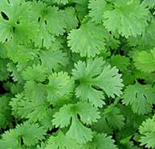
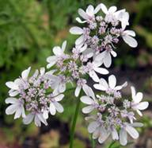
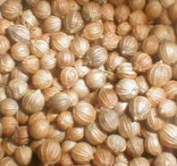
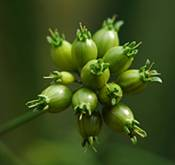
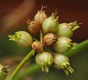
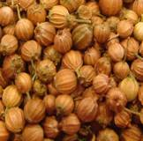

HORT 282 :: Lecture 05 :: CORIANDER

CORIANDER
(Coriandrum sativum, Apiaceae)
Coriander is an annual herb, mainly cultivated for its fruits as well as for the tender green leaves. It is native of the Mediterranean region and is now commercially grown in India, Morocco, U.S.S.R, Hungary, Poland, Rumania, Czechoslovakia, Guatemala, Mexico and the U.S.A. In India, it is grown in Andhra Pradesh, Tamil Nadu, Karnataka, Rajasthan and Madhya Pradesh. It is grown in about 3.51 lakhs hectares with an annual production 1, 67,700 tonnes of grains. Major portion is though consumed locally; a small quantity is being exported now. But our country has ambitious plan to increase the report of coriander to a tune of 9000 tonnes by 2000 A.D.
The fruits have a fragrant odour and pleasant aromatic taste. The odour and taste are due to the essential oil content which varies from 0.1 to 1.0 percent in the dry seeds. These essential oils are used for flavouring liquors, cocoa preparations in confectionary and also to mask the offensive odours in pharmaceutical preparations. The dried ground fruits are the major ingredient of the curry powder. The whole fruits are also used to flavour foods like pickles, sauces and confectionary. The young plants as well as the leaves are used in the preparation of chutney and are also used as seasoning in curries, soups, sauces and chutneys. It has medicinal properties too. Fruits are said to have carminative, diuretic, tonic, stomachic and aphrodisiac properties.
Botany
Coriander belongs to the family Apiaceae. It is a smooth, erect annual herb 30-70 cm high lower leaves broad with crenately lobed margins, upper leaves finely cut with lineary lobes, flowers small, white or pink in compound terminal umbels, fruits- schizocarp, globular, yellow-brown, ribbed 2 seeds, and ripe seeds are aromatic.
|
 Leaf |
 |
 |
Climate and soil
It is a tropical crop and can be grown throughout the year for leaf purposes, but for higher than grain yield it has to be grown in specific season. A dry and cold weather free from frost, especially during flowering and fruit setting stage favours good grain production. Cloudy weather during flowering and fruiting stage favours pest and disease incidences. Heavy rain affects the crop. As an irrigated crop, it can be cultivated on almost all types of soils provided sufficient organic matter is applied. Black cotton soils with high retentivity of moisture are best under rainfed conditions.
Varieties
Varieties |
Parentage |
Special Characters |
Duration |
Yield/ha (Kg) |
CO 1 |
A pure line selection |
Tall plant, many umbels per plant, suitable for green and grains |
110 |
500 |
CO 2 |
Reselection from culture P2 of Gujarat |
High yield, dual purpose variety, tolerant to drought, oil 0.3% |
90 -110 |
600 - 700 |
CO 3 |
Reselection from Acc.No. 695 |
High yield, dual purpose, medium size grain, oil 0.3 -0.4% |
103 |
640 |
Gujarat coriander 1 |
Selection from local |
High yield, more number of branches, seeds bolder and greenish in colour |
112 |
1100 |
Gujarat coriander 2 |
Selection from CO 2 |
High yield, more number of branches, umbels large, bold seeds, no lodging |
110 -115 |
1500 |
Rajendra Swati |
A mass selection from Germplasm type |
High yield, suitable for intercropping, fine seeded, rich in oil, resistant to stem gall |
110 |
1200 – 1400 |
Rcr 41 |
Recurrent selection from UD 41 |
High yield, tall erect, suitable for irrigated areas, resistant to stem gall |
130-140 |
1200 |
Swathi |
Mass selection |
High yield, semi erect, suitable for delayed sowing resistant to stem gall |
80-90 |
885 |
Sadhana |
Mass selection |
High yield, suitable for rainfed areas, semi erect, resistant to aphid and mites |
95-105 |
1000 |
Field preparation
For raising crop, the land is ploughed 3 to 4 times following rains and field must be planted immediately to break the clods and to avoid soil moisture. For irrigated crop the land is ploughed twice or thrice and beds and channels are formed.
Season of cultivation
In the North and Central parts of India and Andhra Pradesh, It is mostly grown as a rabi season crop and hence sowing is done between middle of October and middle of November. Still late sowing is recommended in places vulnerable for frost damage. In certain pockets of the above area, late kharif crop is sometimes sown in August-September. In Tamil Nadu, as an irrigated crop, coriander is raised in June-July and Sep-Oct. In the first season, it matures early before the end of Aug-Sep. In the second season, it matures late with an extended growth phase during Jan-Feb. The growth and the yield of second season crop is found to be better than the first season crop. Under rainfed conditions, it is sown during Sep-Oct, at the onset of North east monsoon and harvested during Jan-Feb.
Sowing
A seed rate of 10 to 15 kg per hectare is required. Seeds are stored for 15-30 days record better and early germination than freshly harvested seeds. Seeds are soaked in water for 12 to 24 hours before sowing also enhances and treated with thiram at 2g per kg of seeds. For irrigated crop, sowing is generally done in rows spaced at 30-40 cm apart with 15 cm between hills. Soil depth should not exceed 3.0 cm. Three to five seeds are sown a hill and later on thinned to two plants per hill. Under rainfed condition seeds are broadcast and covered with country plough. Germination takes place in 10-15 days.
Manuring
About 10 tonnes of farm yard manure is applied at the time of last preparation. In addition, the following fertilizers may be applied. Irrigated crop 15:40:20Kg/ha NPK as basal and 15 kg N at 30DAS, Rainfed crop 20:30:20 kg NPK/ha
Irrigation
First irrigation is given 3 days after sowing and thereafter at 10 – 15 days interval depending upon the soil moisture available in the soil.
After cultivation
The first hoeing and weeding are given in about 30 days. Thinning the plants is also attended simultaneously, leaving only 2 plants per hill. Depending upon the growth 1 or 2 more weedings are done.
Harvesting
The crop will be ready for harvest in about 90 -110 days depending upon the varieties and growing seasons. In certain varieties, harvesting 50% leaves at 60 days 75 days may be done which will fetch additional income but without affecting the grain yield. Harvesting has to be done when the fruits are fully ripe and start changing from green to brown colour. Delaying of the harvest should be avoided lest shattering during harvest and splitting of the fruits in subsequent processing operations. The plants are cut or pulled and piled in to small stacks in the field wither for 2- 3 days the fruits are then threshed out from the plants by beating with sticks or rubbing with the hands. The produce is winnowed, cleaned and dried in partial shade. After drying, the produce is stored in gunny bags lined with paper. The rainfed crop yields on an average 400 – 500 kg/ha and the irrigated crop 600 -1200 kg/ha.
 Imature umbel |
 |
 |
Plant protection
At the seedling stage coriander is often attacked by the leaf eating caterpillars and semi-loopers and at the flowering stage by the aphids. Spraying the crop with methyl demeton (0.05 %) is recommended to control aphids but at flowering stage the use of any insecticide would kill the bee population affecting pollination in the crop.
Powdery mildew (Erysiphe polygoni) is a serious disease which ruin the crop if allowed unchecked in the initial stage itself. Spraying wettable sulphur 0.25 % or 0.2 % solution of karathane twice at 10-15 days interval is recommended. Grain mold is caused by Helminthosporium sp, Alternaria sp, Carvularia sp and Fusarium sp. It can be controlled by spraying carbendazim 0.1 % 20 days after grain set.
***********
- Coriander belongs to the family ____________
- Coriander is originated from __________
- Important varieties of coriander are _____________
- Fruits are botanically named as _____________
- Maturity indices for coriander is _______________
| Download this lecture as PDF here |